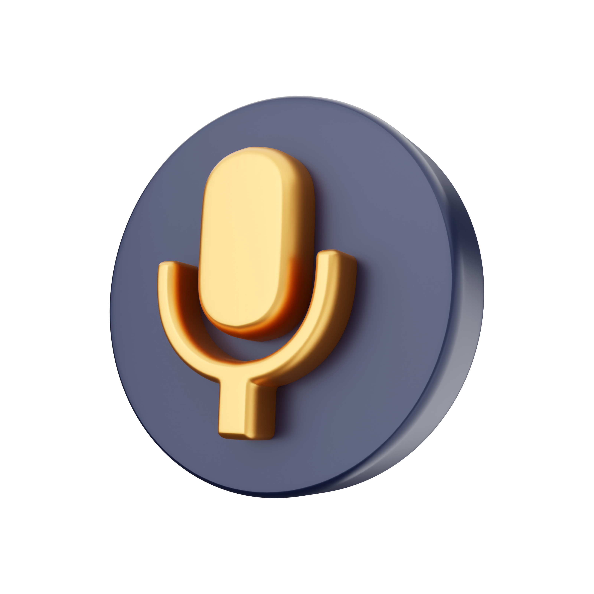
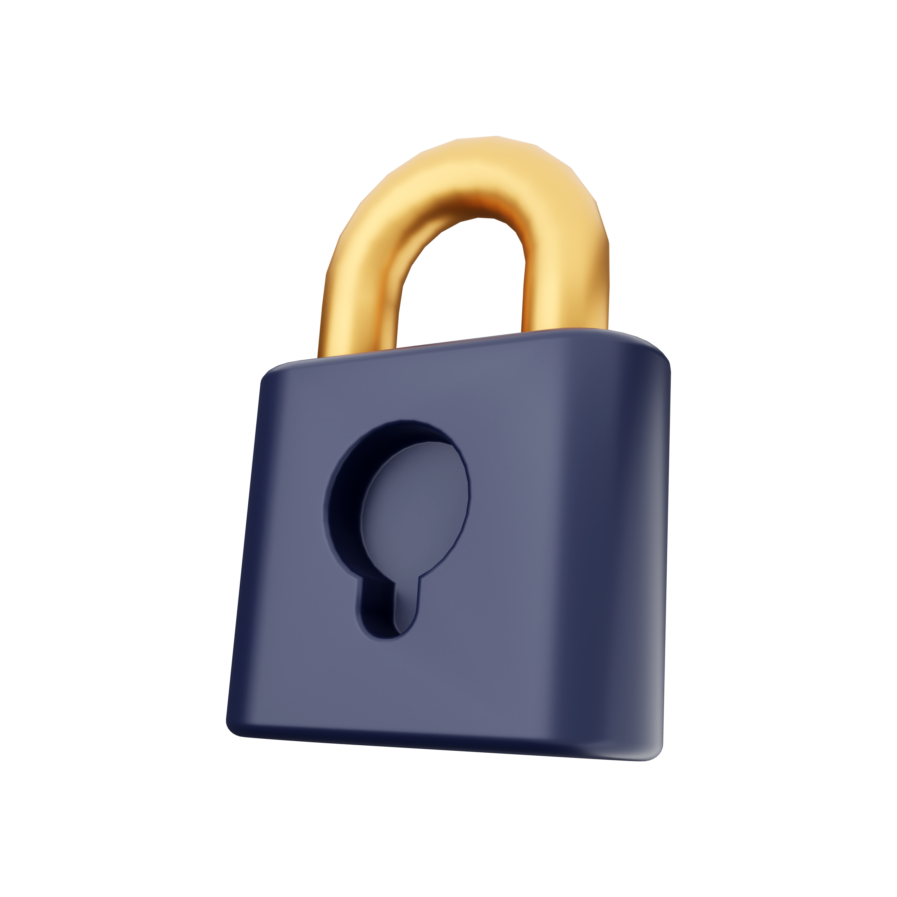

Free voice recorder
Privacy
Online voice recorder
Downloads

Voice Recorder is completely free. No hidden payments, activation fees, or charges for extra features.

We guarantee that our app is secure. Everything you record is accessible to you alone: nothing is uploaded to our servers for storage.

Our Voice Recorder is a convenient and simple online tool that can be used right in your browser. It allows you to record your voice using a microphone and save it as an .WAV file.
After the recording is complete, you can download it and use it in any way you want. You can also play the recording in the browser if you dont want to download it.